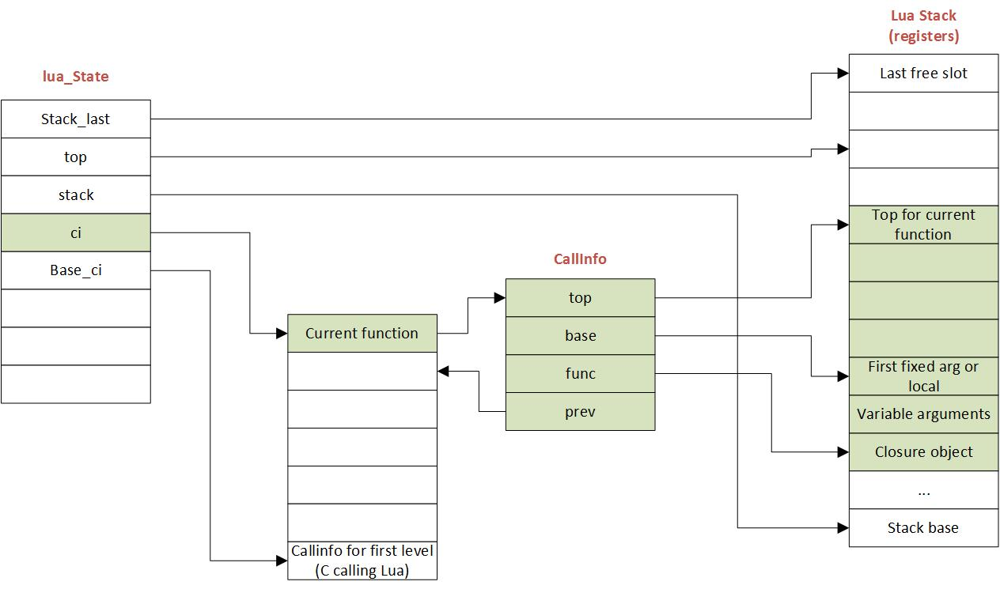

State
global_State and lua_State
There are two kinds of states a Lua VM keep track of while running: global_State and lua_State.
Each Lua VM has a global_State. It keeps the information about GC metadata, metatables, and string cache.
/*
** 'global state', shared by all threads of this state
*/
typedef struct global_State {
lua_Alloc frealloc; /* function to reallocate memory */
void *ud; /* auxiliary data to 'frealloc' */
l_mem totalbytes; /* number of bytes currently allocated - GCdebt */
l_mem GCdebt; /* bytes allocated not yet compensated by the collector */
lu_mem GCmemtrav; /* memory traversed by the GC */
lu_mem GCestimate; /* an estimate of the non-garbage memory in use */
stringtable strt; /* hash table for strings */
TValue l_registry;
unsigned int seed; /* randomized seed for hashes */
lu_byte currentwhite;
lu_byte gcstate; /* state of garbage collector */
lu_byte gckind; /* kind of GC running */
lu_byte gcrunning; /* true if GC is running */
GCObject *allgc; /* list of all collectable objects */
GCObject **sweepgc; /* current position of sweep in list */
GCObject *finobj; /* list of collectable objects with finalizers */
GCObject *gray; /* list of gray objects */
GCObject *grayagain; /* list of objects to be traversed atomically */
GCObject *weak; /* list of tables with weak values */
GCObject *ephemeron; /* list of ephemeron tables (weak keys) */
GCObject *allweak; /* list of all-weak tables */
GCObject *tobefnz; /* list of userdata to be GC */
GCObject *fixedgc; /* list of objects not to be collected */
struct lua_State *twups; /* list of threads with open upvalues */
unsigned int gcfinnum; /* number of finalizers to call in each GC step */
int gcpause; /* size of pause between successive GCs */
int gcstepmul; /* GC 'granularity' */
lua_CFunction panic; /* to be called in unprotected errors */
struct lua_State *mainthread;
const lua_Number *version; /* pointer to version number */
TString *memerrmsg; /* memory-error message */
TString *tmname[TM_N]; /* array with tag-method names */
struct Table *mt[LUA_NUMTAGS]; /* metatables for basic types */
TString *strcache[STRCACHE_N][STRCACHE_M]; /* cache for strings in API */
} global_State;
On the other hand, lua_State correspond to a Lua thread. The call stack of a given thread is also included in the corresponding lua_State.
/*
** 'per thread' state
*/
struct lua_State {
CommonHeader;
unsigned short nci; /* number of items in 'ci' list */
lu_byte status;
StkId top; /* first free slot in the stack */
global_State *l_G;
CallInfo *ci; /* call info for current function */
const Instruction *oldpc; /* last pc traced */
StkId stack_last; /* last free slot in the stack */
StkId stack; /* stack base */
UpVal *openupval; /* list of open upvalues in this stack */
GCObject *gclist;
struct lua_State *twups; /* list of threads with open upvalues */
struct lua_longjmp *errorJmp; /* current error recover point */
CallInfo base_ci; /* CallInfo for first level (C calling Lua) */
volatile lua_Hook hook;
ptrdiff_t errfunc; /* current error handling function (stack index) */
int stacksize;
int basehookcount;
int hookcount;
unsigned short nny; /* number of non-yieldable calls in stack */
unsigned short nCcalls; /* number of nested C calls */
l_signalT hookmask;
lu_byte allowhook;
};
Call stack
A call stack contains the information of an active subroutine. It's used to keep track of the point to which each subroutine should return control when it finishes executing.
Here's the figure showing how the stack is related to other Lua objects :
 source: Lua 5.3 Bytecode Reference
While running, Lua VM maintains two stacks: a Callinfo stack and a TValue stack.
- The
Callinfostack keeps tracks of activation frames. - The
TValuestack stores the data needed by each subroutine, act as registers.
When a new lua_State is created, its stack is also initialized:
static void stack_init (lua_State *L1, lua_State *L) {
int i; CallInfo *ci;
/* initialize stack array */
L1->stack = luaM_newvector(L, BASIC_STACK_SIZE, TValue);
L1->stacksize = BASIC_STACK_SIZE;
for (i = 0; i < BASIC_STACK_SIZE; i++)
setnilvalue(L1->stack + i); /* erase new stack */
L1->top = L1->stack;
L1->stack_last = L1->stack + L1->stacksize - EXTRA_STACK;
/* initialize first ci */
ci = &L1->base_ci;
ci->next = ci->previous = NULL;
ci->callstatus = 0;
ci->func = L1->top;
setnilvalue(L1->top++); /* 'function' entry for this 'ci' */
ci->top = L1->top + LUA_MINSTACK;
L1->ci = ci;
}
- A
TValuearray is initialized with lengthBASIC_STACK_SIZE, filled withnil. - A
Callinfois created and pointed to the first frame in theTValuestack.
Here's the definition of Callstack:
typedef struct CallInfo {
StkId func; /* function index in the stack */
StkId top; /* top for this function */
struct CallInfo *previous, *next; /* dynamic call link */
union {
struct { /* only for Lua functions */
StkId base; /* base for this function */
const Instruction *savedpc;
} l;
struct { /* only for C functions */
lua_KFunction k; /* continuation in case of yields */
ptrdiff_t old_errfunc;
lua_KContext ctx; /* context info. in case of yields */
} c;
} u;
ptrdiff_t extra;
short nresults; /* expected number of results from this function */
unsigned short callstatus;
} CallInfo;